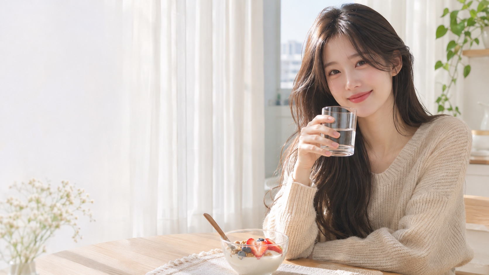
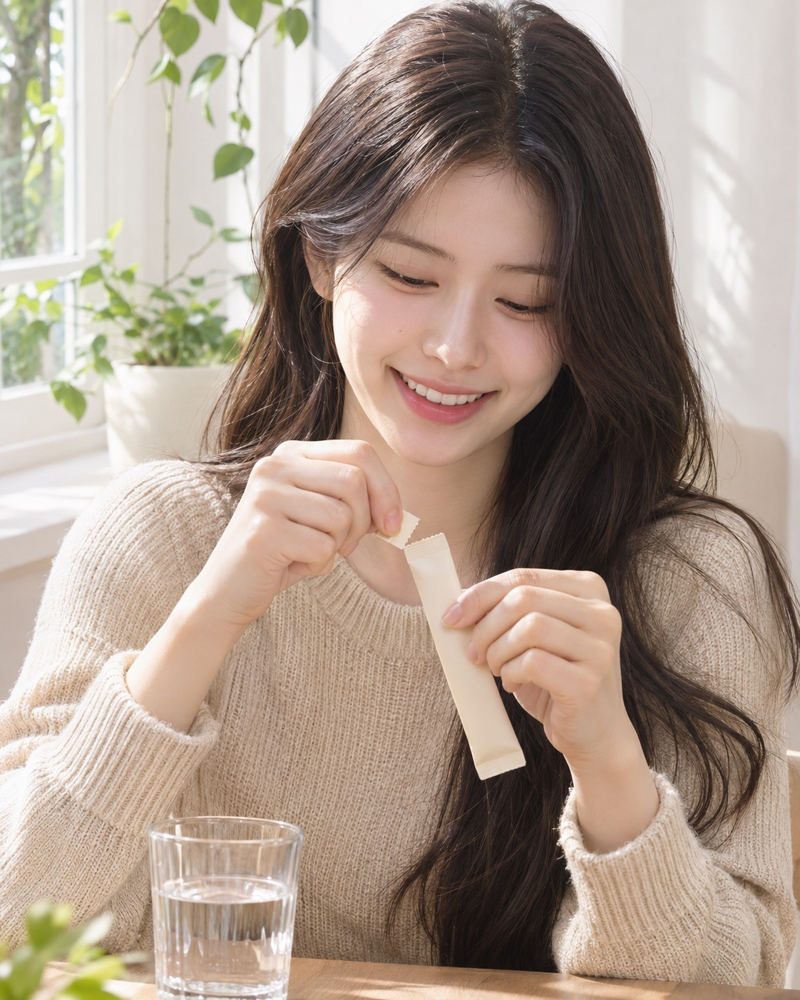
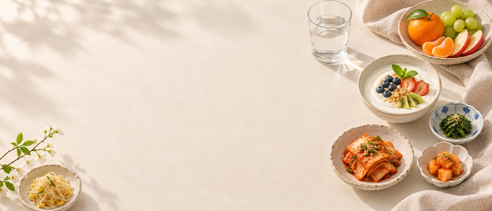

CJ R&D · CJ Bioscience01
마이크로바이옴 연구 · 기술
CJ 마이크로바이옴 R&D 센터의 김치 유래 균주 연구에, CJ바이오사이언스의 마이크로바이옴 정밀 분석 기술이 더해집니다.
- CJ · 김치 유래 유산균 3,500여 개 확보
- CJ바이오사이언스 · MAC, CJRB-101 협업

3,500여 개의 김치 유래 유산균 연구에서 시작해, 아침부터 밤까지 당신의 일상에 맞춘 웰니스 솔루션을 만듭니다.
3,500+
김치에서 분리해 확보한
유산균 수
출처: CJ 핵심 균주 자산
20년+
마이크로바이옴 R&D 센터의
유산균 연구
출처: CJ웰케어 보도자료
19편
국제 학술지에 실린
대표 균주 연구 논문
출처: 연구 성과 Publications
2013
국내 개발 유산균주 최초
개별인정형 획득 (CJLP133)
출처: CJ웰케어 연혁
CJ의 마이크로바이옴 연구와 CJ바이오사이언스의 기술이 CJ웰케어의 맞춤형 제품이 되고, 그 제품이 더 건강한 하루로 이어집니다.
CJ R&D · CJ Bioscience01
CJ 마이크로바이옴 R&D 센터의 김치 유래 균주 연구에, CJ바이오사이언스의 마이크로바이옴 정밀 분석 기술이 더해집니다.

CJ Wellcare02
검증된 균주와 기능성 소재를 장 건강, 피부, 수면 등 고민별 제품으로 설계합니다.
You03
아침 유산균부터 나이트 루틴까지, 하루의 흐름에 맞춘 웰니스로 일상 전체를 케어합니다.
With CJ BioscienceMAC PLAN의 여정
CJ Original StrainCJLP133의 여정

07:00 · Morning공복의 아침, 장 건강 루틴으로 하루의 컨디션을 준비합니다. 미생물을 위한 식이섬유까지 함께 챙기세요.
눈 · 피부 · 활력처럼 낮 시간의 고민에 맞춘 전문 브랜드로 일상의 리듬을 지킵니다.
하루를 정리하는 나이트 루틴. 오늘 밤은 혼자가 아니에요.
대표 균주를 어떤 대상과 설계로 연구했는지, 출처와 함께 투명하게 보여드립니다.
식약처 인정 기능성: ‘면역과민반응에 의한 피부 상태 개선에 도움을 줄 수 있음’. 소아 대상 무작위 배정 인체적용시험으로 검증했습니다.
Han et al. Pediatric Allergy and Immunology, 2012
피지 · 수분 등 피부 상태 관련 지표를 섭취 전후로 평가한 무작위 대조 인체적용시험입니다.
Kim et al. Nutrients, 2021
기능성 설사와 높은 fecal calprotectin을 가진 대상자에서 배변 증상과 장 염증 관련 지표를 평가한 탐색적 인체적용시험입니다.
Jung et al. Nutrients, 2022

최신 연구 소식과 계절별 루틴, 신제품 소식을 가장 먼저 받아보세요.
건강기능식품 안내 · 건강기능식품은 질병의 예방 및 치료를 위한 의약품이 아닙니다. 인체적용시험 결과는 연구 대상자 기준이며 개인에 따라 차이가 있을 수 있습니다. 연구 요약은 기존 CJ웰케어 홈페이지 ‘연구 성과’ 자료를 인용했습니다.